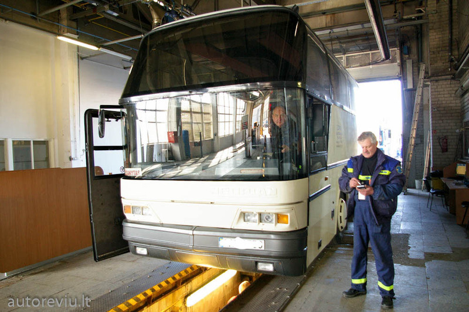
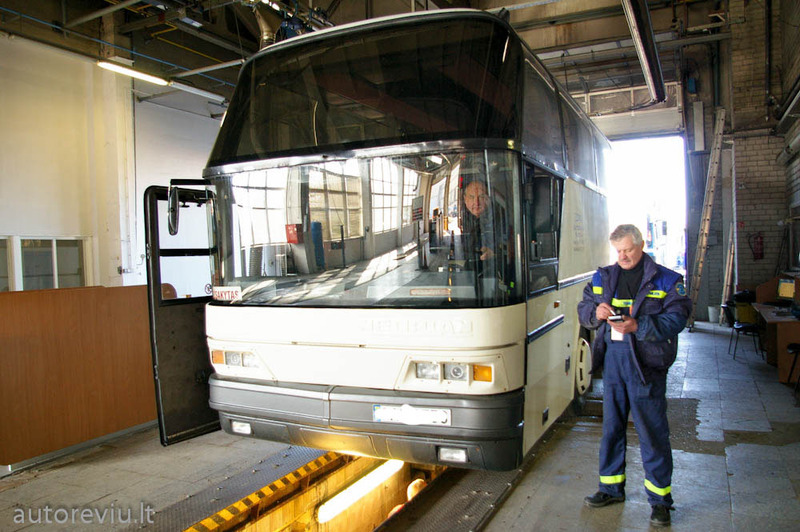

KĄ DARYTI, KAI ESATE APGAUTI INTERNETE - TECHNINĖ ĮRANGA - 2020
2020.10.29 07:52

Įdomus
5 įdomūs ir praktiški NFC naudojimo „Android“ būdai
Artimojo lauko ryšy arba NFC leidžia greitai keiti informacija tarp išmaniųjų telefonų ir kitų išmaniųjų įrenginių. „NFC“ naudojima „Android“ yra failų bendrinima, bekontaktė mokėjimo itemo ir progra Skaityti
Kategorijos Svetainės
Žaidimų Techninė Įranga Kitas Programinė Įranga Socialinės Žiniasklaidosyeniakrep
Kitas Žaidimų Programinė Įranga Techninė Įranga Socialinės Žiniasklaidos Kitas Žaidimų Programinė Įranga Techninė Įranga Socialinės ŽiniasklaidosKą daryti, jei esate apgauti internete
Jei ju apgaudinėjo internete, neigėdykite. ukčiai daro viką, kad patektų į mu viai įmanomai būdai, pradedant ukčiavimu el. Paštu, uklatotomi vetainėmi, baigiant mobiliuoju telefonu „Mihing“ ir vikuo,
Turinys:
Nedelsdami paskambinkite savo kreditinių kortelių bendrovei ar bankui Pateikite policijos ataskaitą Pateikite 3 pagrindiniams kredito biurams pareiškimą dėl aukos dėl sukčiavimo (dar žinomą kaip išplėstinį įspėjimą dėl sukčiavimo) Apsaugokite savo kredito ataskaitas Atnaujinkite savo kenkėjiškų programų programinę įrangą ir nuskaitykite kompiuterįJei jus apgaudinėjo internete, nesigėdykite. Sukčiai daro viską, kad patektų į mus visais įmanomais būdais, pradedant sukčiavimu el. Paštu, suklastotomis svetainėmis, baigiant mobiliuoju telefonu „SMiShing“ ir viskuo, kas tarp jų.
Interneto sukčiai pavogdami pinigus ir informaciją naudoja baimę, melagingą skubą, smalsumą ir kitas taktikas. Nukentėjusieji ne visada praneša, kai jiems buvo paduota, nes jiems gėda dėl kritimo dėl aferos. Tiesa ta, kad taip gali atsitikti bet kam. Štai keletas patarimų, kurie padės atsigauti.
Nedelsdami paskambinkite savo kreditinių kortelių bendrovei ar bankui
Jei įtariamam sukčiui pateikėte savo kredito kortelės numerį ar banko informaciją, kuo skubiau pasakykite savo finansų įstaigai, kad ji galėtų sulaikyti jūsų sąskaitą ir užkirsti kelią tolesniems jos mokesčiams.
Visada skambinkite numeriu kortelės gale arba naujausiame pranešime. Niekada neskambinkite numeriu el. Laiške, tai gali būti sukčiavimo sukčiai.
Pateikite policijos ataskaitą
Pateikite policijos ataskaitą taip, kaip jus apgavo, ypač jei iš jūsų sąskaitos buvo pavogti pinigai. Jūsų bankas ar kreditinių kortelių įmonė, kaip ir pagrindinės kredito agentūros, norės policijos ataskaitos kopijos.
Vis dėlto neskambinkite 9-1-1 dėl tokio tipo klausimų, nebent aferistas grasina jūsų gyvybei ir jums gresia fizinis pavojus. Pateikdami interneto sukčiavimo ar su sukčiavimu susijusią ataskaitą, paskambinkite į vietos policijos departamento skubios pagalbos tarnybos numerį ir paprašykite sukčiavimo ar su kompiuteriu susijusių nusikaltimų skyriaus.
Pateikite 3 pagrindiniams kredito biurams pareiškimą dėl aukos dėl sukčiavimo (dar žinomą kaip išplėstinį įspėjimą dėl sukčiavimo)
Pateikdami įspėjimą apie sukčiavimą trims pagrindiniams kredito biurams („Experian“, „TransUnion“ ir „Equifax“), jūsų kredito byloje pridėta pastaba, kurioje nurodoma, kad esate sukčiavimo auka. Užraše reikalaujama, kad įmonė, parengusi kredito ataskaitą, paskambintų vienu iš dviejų telefono numerių, kuriuos nurodėte, kai pateikėte įspėjimą apie sukčiavimą.
Tai negarantuoja, kad paskolos davėjas nesuteiks vagiui kredito, tačiau jis išmeta raudoną vėliavą. Skolintojai, perskaitę šią pastabą, jums paskambins ir galėsite jiems pasakyti, kad neleidote atlikti kredito užklausos, o asmuo, bandantis atidaryti sąskaitą, yra apsimetėlis.
Apsaugokite savo kredito ataskaitas
Jei esate tapatybės vagystės auka arba manote, kad sukčiai turi reikiamos informacijos, kad gautų kreditines korteles ar paskolas jūsų vardu, stebėkite savo kredito balą. Susisiekite su trimis pagrindiniais kredito biurais ir paprašykite kredito ataskaitos kopijų. Telefonu (arba jų svetainėse) paprašykite jų įšaldyti jūsų ataskaitas.
Apsaugos įšaldymas gali trukdyti vagims atidaryti sąskaitas naudojant jūsų pavogtą tapatybę. Kai įsigalioja saugumo įšaldymas, kredito ataskaitų agentūra paprašo prašytojo įvesti PIN arba slaptažodį, kol jie pasidalins jūsų kredito balais su skolintoju, jei kas nors kreipiasi dėl paskolos ar atidaro sąskaitą naudodamas jūsų vardą. Jei tapatybės vagis nežino jūsų PIN ir skolintojas laikosi tinkamų procedūrų, paskolos davėjas nesuteiks jiems sąskaitos nežinodamas, ar jie turi gerą kreditą.
Jei pasirinksite saugumo įšaldymą, susisiekite su trimis pagrindiniais kredito biurais ir pateikite prašymą įšaldyti su kiekvienu.
Atnaujinkite savo kenkėjiškų programų programinę įrangą ir nuskaitykite kompiuterį
Nusikaltėliai, kurie jums atsiuntė tą sukčiavimo el. Laišką, gali būti, kad jame yra įdėtos nuorodos į kenkėjiškas programas, o jūsų kompiuteris gali būti užkrėstas. Ši kenkėjiška programa užfiksuoja jūsų paskyros informaciją ir siunčia ją sukčiams. Įsitikinkite, kad jūsų kenkėjiškų programų programinė įranga yra atnaujinta, ir atlikite išsamų kompiuterio nuskaitymą. Kaip papildomą atsargumo priemonę įdiekite ir paleiskite antrąjį nuomonių skaitytuvą.
Sukčiai uždėjo visokių raudonų vėliavų.Sužinokite, kaip atpažinti šias raudonas vėliavas ir apgaudinėti savo smegenis, kad apsisaugotumėte nuo būsimų sukčių.
Ankstesnis Straipsnis
„Focus Assist“: kaip nustatyti ramų laiką „Windows 10“
Kitas Straipsnis
Nustok nustebti „Siri“ iš tikrųjų tavęs klauso
Įdomios Straipsniai
„BlueStacks“ leidžia jums žaisti „Android“ programas „Windows“
Ar verta pirkti elektroninį skaitytuvą, kad sutaupytumėte pinigų knygoms?
Kaip sukurti „Cast Shadow“ „Adobe Photoshop CC“
Naujausi Straipsniai
Surasti pigų pataisymą sulaužytam šalinimo įrenginiui
Techninė ĮrangaKaip rasti žmonių „Twitter“ el. Paštu
Socialinės Žiniasklaidos6 geriausi išlenkti televizoriai 2020 m
KitasKaip naudotis „Photoshop Marquee“ įrankiu
Programinė ĮrangaKaip paslėpti savo pomėgius „Facebook“
Socialinės ŽiniasklaidosSvetainės Kategorija
Žaidimų Programinė Įranga Programinė Įranga KitasVisos Kategorijos
Techninė Įranga Socialinės Žiniasklaidos Programinė Įranga Kitas ŽaidimųSkaitymo Šiandien
Žemųjų dažnių garsiakalbiai - tai, ką reikia žinoti
Techninė Įranga6 geriausi „Smash Ultimate“ valdikliai 2020 m
KitasKaip spausdinti nuotraukas namuose
Techninė ĮrangaTau
Peržiūrėkite du „PowerPoint“ pristatymus vienu metu
Programinė ĮrangaKaip ištaisyti Fm20.dll nerastą ar trūksta klaidų
Programinė ĮrangaKaip susisiekti su „Snapchat“ klientų aptarnavimo tarnyba
Socialinės Žiniasklaidosyeniakrep | ar | az | bg | bn | ca | cs | da | de | el | es | et | ga | fa | fi | fr | hi | hr | hu | hy | id | is | it | iw | ja | ka | ko | kk | ky | lb | lo | lv | mr | nl | no | pl | pt | ro | ru | sk | sl | sq | sr | sv | ta | te | th | tl | uk | ur | uz | vi | zh
Sitemap
top- Techninė įranga | UCS
- Techninė įranga „Porsche Tequipment Genuine Access ...
- Techninė įranga - BTT Cloud
- KĄ DARYTI, KAI ESATE APGAUTI INTERNETE - TECHNINĖ ĮRANGA ...
- Techninė įranga – ELIP (Enciklopedija Lietuvai ir pasauliui)
- Techninė įranga - Wikiwand
- KĄ REIŠKIA „SAAS“? - TECHNINĖ ĮRANGA - 2020
- Mažmeninė techninė įranga - BS/2
- Techninė įranga | Egledagyte's Blog
- Techninė Įranga | September 2020
- Techninė įranga | UCS
Mažmeninė techninė įranga Tai „Diebold Nixdorf“ atsiskaitymo kasos ir POS sistemos „Beetle“, periferiniai įrenginiai (spausdintuvai, skeneriai, elektroniniai kainynai, grynųjų pinigų saugyklos), banknotų priėmimo automatai, savitarnos kasos ir mokėjimo sistemos („PayTower“), taros priėmimo automatai („Revendo“) ir kt.
- Techninė įranga „Porsche Tequipment Genuine Access ...
Techninė įranga „Porsche Tequipment“ kuriama pasitelkus per 20 metų sukauptą patirtį ir žinias, todėl jai būdinga viena – „Porsche“ įprasta kokybė. Ji kuriama įsivaizduojant visą automobilį, tačiau idealiai pritaikant jūsų „Porsche“. Šiuos aukštos kokybės produktus lengvai pritaikysite savo „Porsche ...
- Techninė įranga - BTT Cloud
Techninė įranga- tai kompiuterių aparatinė įranga, kurios pagalba mes gebame "bendrauti" su progr. įranga. Paprastai techninę įrangą sudaro tokie komponentai: monitorius, centrinis korpusas, klaviatūra, pelė, spausdintuvas ir t.t. Monitorius- tai įrenginys, kurio pagalba mes "matome" tai, ką mums atvaizduoja programinė įranga.
- KĄ DARYTI, KAI ESATE APGAUTI INTERNETE - TECHNINĖ ĮRANGA ...
Techninė Įranga. Kas yra DCIM failas? 2020; Jei fotografavote tik kino kameromi, labai tikėtina, kad niekada nepamatyite DCIM failo. Telefonų u fotoaparatai populiarėjant, labiau tikėtina, kad šių failų neraite. Kadangi gamintojai gamina tiek d...
- Techninė įranga – ELIP (Enciklopedija Lietuvai ir pasauliui)
Techninė įranga (aparatinė įranga, angl. hardware, pranc. matériel) informacinėse technologijose – informacijos apdorojimo sistemos fizinių komponentų visuma arba tos visumos dalis. Kompiuterių techninė įranga apima ir visas fizines kompiuterio dalis, bet ne programinę įrangą, valdančią šias dalis.
- Techninė įranga - Wikiwand
techninė įranga (Informatika) - informacijos apdorojimo sistemos fizinių komponentų visuma arba tos visumos dalis. Pvz. kompiuteriai, išoriniai įrenginiai. Žodžių junginį sudaro žodžiai: techninė; įranga; Vertimai
- KĄ REIŠKIA „SAAS“? - TECHNINĖ ĮRANGA - 2020
Techninė įranga informacinėse technologijose – informacijos apdorojimo sistemos fizinių komponentų visuma arba tos visumos dalis.[1] Kompiuterių techninė įranga apima ir visas fizines kompiuterio dalis, bet ne programinę įrangą, valdančią šias dalis.
- Mažmeninė techninė įranga - BS/2
Verslo procesų automatizavimo techninė įranga: POS terminalai, spausdintuvai, kasos aparatai ir kita techninė įranga individualiems verslo poreikiams.
- Techninė įranga | Egledagyte's Blog
Techninė įranga. Skaitmeniniai nivelyrai; Trimble TDC100; Trimble X7; Trimble X7; Trimble X7; Trimble SiteVision; DJI Phantom 4 RTK; DJI Phantom 4 RTK; Bepiločiai orlaiviai. DJI Matrice 300 RTK; DJI Phantom 4 RTK; DJI Mavic 2 Enterprise; DJI Phantom 4 Multispektrinis; DJI Matrice 200/210 serija;
- Techninė Įranga | September 2020
„Software as a Service“ (SaaS) yra procesas, kurio metu programinė įranga teikiama iš anksto nustatytu prenumeratos pagrindu; paprastai kas mėnesį ar kasmet. Štai ką reikia žinoti apie „SaaS“ platformą.
Mažmeninė techninė įranga Tai „Diebold Nixdorf“ atsiskaitymo kasos ir POS sistemos „Beetle“, periferiniai įrenginiai (spausdintuvai, skeneriai, elektroniniai kainynai, grynųjų pinigų saugyklos), banknotų priėmimo automatai, savitarnos kasos ir mokėjimo sistemos („PayTower“), taros priėmimo automatai („Revendo“) ir kt.
Techninė įranga „Porsche Tequipment“ kuriama pasitelkus per 20 metų sukauptą patirtį ir žinias, todėl jai būdinga viena – „Porsche“ įprasta kokybė. Ji kuriama įsivaizduojant visą automobilį, tačiau idealiai pritaikant jūsų „Porsche“. Šiuos aukštos kokybės produktus lengvai pritaikysite savo „Porsche ...
Techninė įranga- tai kompiuterių aparatinė įranga, kurios pagalba mes gebame "bendrauti" su progr. įranga. Paprastai techninę įrangą sudaro tokie komponentai: monitorius, centrinis korpusas, klaviatūra, pelė, spausdintuvas ir t.t. Monitorius- tai įrenginys, kurio pagalba mes "matome" tai, ką mums atvaizduoja programinė įranga.
Techninė Įranga. Kas yra DCIM failas? 2020; Jei fotografavote tik kino kameromi, labai tikėtina, kad niekada nepamatyite DCIM failo. Telefonų u fotoaparatai populiarėjant, labiau tikėtina, kad šių failų neraite. Kadangi gamintojai gamina tiek d...
Techninė įranga (aparatinė įranga, angl. hardware, pranc. matériel) informacinėse technologijose – informacijos apdorojimo sistemos fizinių komponentų visuma arba tos visumos dalis. Kompiuterių techninė įranga apima ir visas fizines kompiuterio dalis, bet ne programinę įrangą, valdančią šias dalis.
techninė įranga (Informatika) - informacijos apdorojimo sistemos fizinių komponentų visuma arba tos visumos dalis. Pvz. kompiuteriai, išoriniai įrenginiai. Žodžių junginį sudaro žodžiai: techninė; įranga; Vertimai
Techninė įranga informacinėse technologijose – informacijos apdorojimo sistemos fizinių komponentų visuma arba tos visumos dalis.[1] Kompiuterių techninė įranga apima ir visas fizines kompiuterio dalis, bet ne programinę įrangą, valdančią šias dalis.
Verslo procesų automatizavimo techninė įranga: POS terminalai, spausdintuvai, kasos aparatai ir kita techninė įranga individualiems verslo poreikiams.
Techninė įranga. Skaitmeniniai nivelyrai; Trimble TDC100; Trimble X7; Trimble X7; Trimble X7; Trimble SiteVision; DJI Phantom 4 RTK; DJI Phantom 4 RTK; Bepiločiai orlaiviai. DJI Matrice 300 RTK; DJI Phantom 4 RTK; DJI Mavic 2 Enterprise; DJI Phantom 4 Multispektrinis; DJI Matrice 200/210 serija;
„Software as a Service“ (SaaS) yra procesas, kurio metu programinė įranga teikiama iš anksto nustatytu prenumeratos pagrindu; paprastai kas mėnesį ar kasmet. Štai ką reikia žinoti apie „SaaS“ platformą.
 
